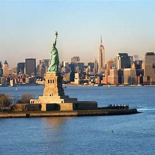
United States
Explore top attractions, itineraries, and travel insights for United States.
Open DestinationBrowse all featured countries in North America and open destination pages with real attractions.

Explore top attractions, itineraries, and travel insights for United States.
Open Destination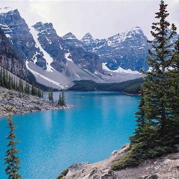
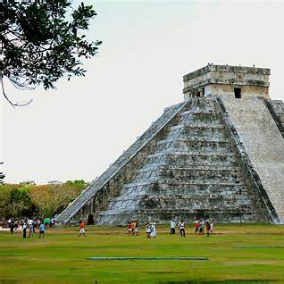
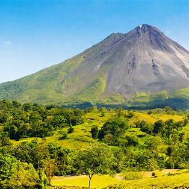
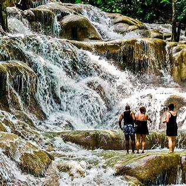
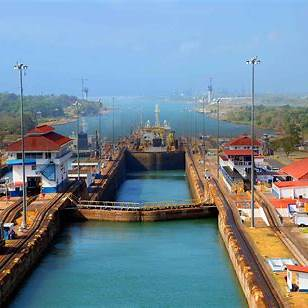
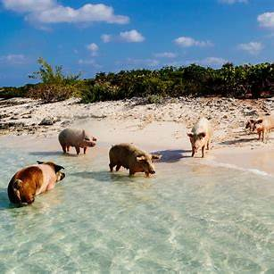
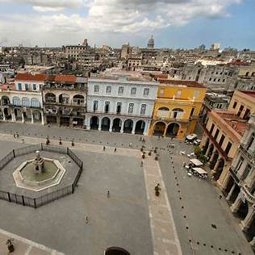
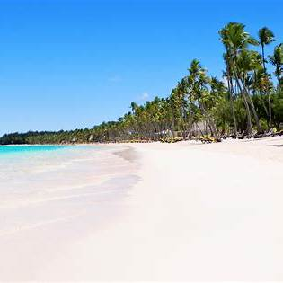
Explore top attractions, itineraries, and travel insights for Dominican Republic.
Open Destination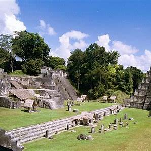
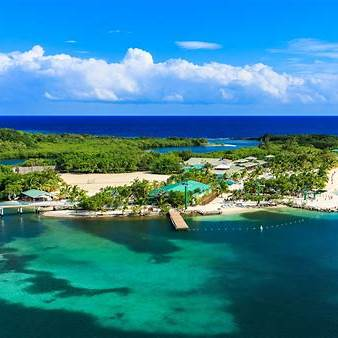
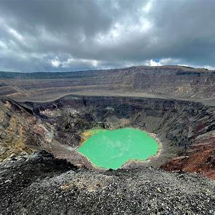
Explore top attractions, itineraries, and travel insights for El Salvador.
Open Destination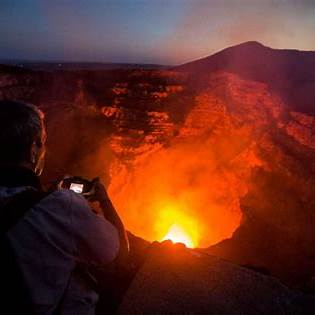